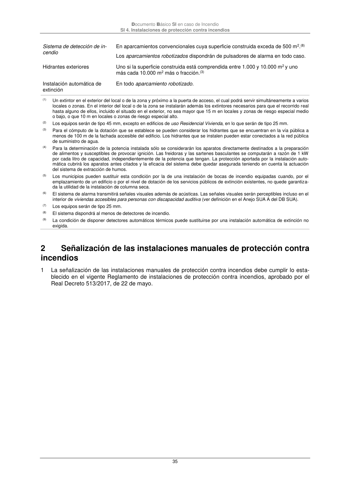

DB-SI Seguridad en caso de incendio · edición 2025-03-04 · capa oficial
Documento DB-SI-oficial · SHA-256 del PDF 0a2e78cd62471d9cc5cfe2efbc6aa39fdbad73c124aea7b039f9de96c141e105
Página física 35 de 92.
Copia fiel del PDF fuente · Fuente oficial
Ficha de la disposición en la fuente oficial
Formato: Texto de la página (Markdown)
Documento Básico SI en caso de Incendio SI 4. Instalaciones de protección contra incendios 35 Sistema de detección de in- cendio En aparcamientos convencionales cuya superficie construida exceda de 500 m2.(8) Los aparcamientos robotizados dispondrán de pulsadores de alarma en todo caso. Hidrantes exteriores Uno si la superficie construida está comprendida entre 1.000 y 10.000 m2 y uno más cada 10.000 m2 más o fracción.(3) Instalación automática de extinción En todo aparcamiento robotizado. (1) Un extintor en el exterior del local o de la zona y próximo a la puerta de acceso, el cual podrá servir simultáneamente a varios locales o zonas. En el interior del local o de la zona se instalarán además los extintores necesarios para que el recorrido real hasta alguno de ellos, incluido el situado en el exterior, no sea mayor que 15 m en locales y zonas de riesgo especial medio o bajo, o que 10 m en locales o zonas de riesgo especial alto. (2) Los equipos serán de tipo 45 mm, excepto en edificios de uso Residencial Vivienda, en lo que serán de tipo 25 mm. (3) Para el cómputo de la dotación que se establece se pueden considerar los hidrantes que se encuentran en la vía pública a menos de 100 m de la fachada accesible del edificio. Los hidrantes que se instalen pueden estar conectados a la red pública de suministro de agua. (4) Para la determinación de la potencia instalada sólo se considerarán los aparatos directamente destinados a la preparación de alimentos y susceptibles de provocar ignición. Las freidoras y las sartenes basculantes se computarán a razón de 1 kW por cada litro de capacidad, independientemente de la potencia que tengan. La protección aportada por la instalación auto- mática cubrirá los aparatos antes citados y la eficacia del sistema debe quedar asegurada teniendo en cuenta la actuación del sistema de extracción de humos. (5) Los municipios pueden sustituir esta condición por la de una instalación de bocas de incendio equipadas cuando, por el emplazamiento de un edificio o por el nivel de dotación de los servicios públicos de extinción existentes, no quede garantiza- da la utilidad de la instalación de columna seca. (6) El sistema de alarma transmitirá señales visuales además de acústicas. Las señales visuales serán perceptibles incluso en el interior de viviendas accesibles para personas con discapacidad auditiva (ver definición en el Anejo SUA A del DB SUA). (7) Los equipos serán de tipo 25 mm. (8) El sistema dispondrá al menos de detectores de incendio. (9) La condición de disponer detectores automáticos térmicos puede sustituirse por una instalación automática de extinción no exigida. 2 Señalización de las instalaciones manuales de protección contra incendios 1 La señalización de las instalaciones manuales de protección contra incendios debe cumplir lo esta- blecido en el vigente Reglamento de instalaciones de protección contra incendios, aprobado por el Real Decreto 513/2017, de 22 de mayo.
